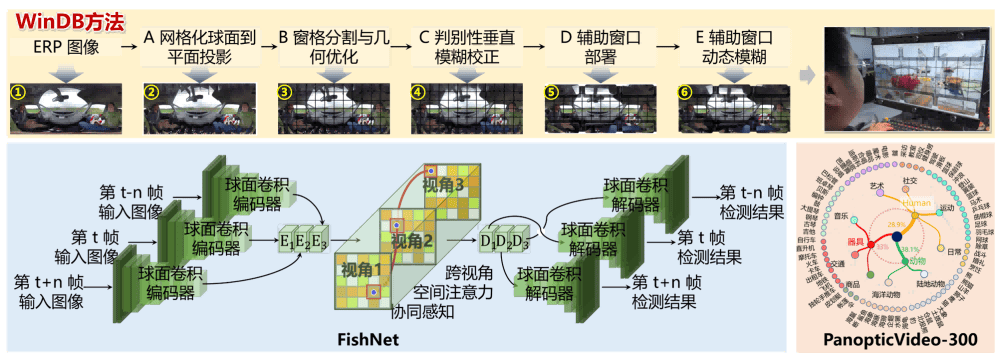
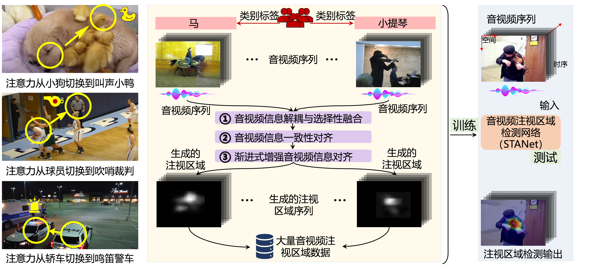
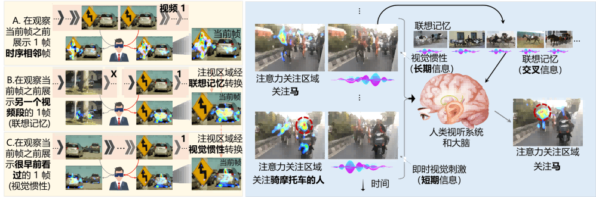
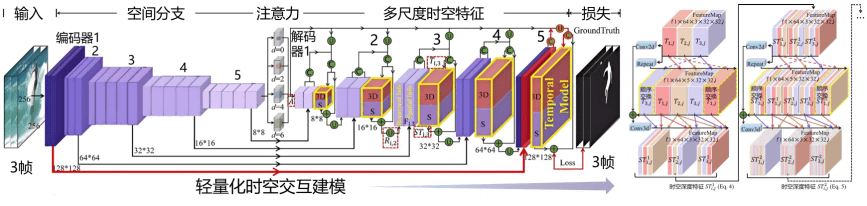
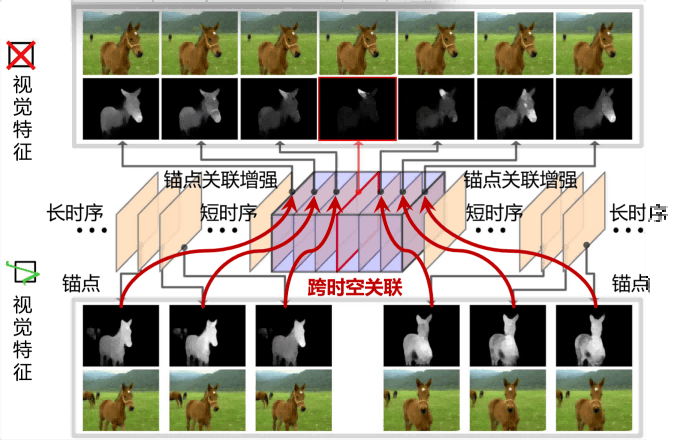
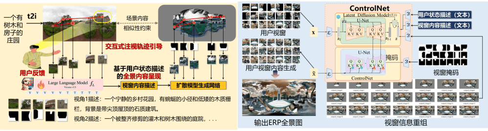

TPAMI 2025
WinDB: HMD-Free and Distortion-Free Panoptic Video Fixation Learning
IEEE Transactions on Pattern Analysis and Machine Intelligence (TPAMI), 2025, 47(3): 1694-1713.
第一作者，CCF A 类期刊，中科院一区 Top，影响因子 18.6

Academic Homepage
王国涛，青岛科技大学信息科学技术学院特聘副教授五级岗、硕士生导师、博士后，博士毕业于北京航空航天大学虚拟现实技术与系统全国重点实验室， 长期从事空间智能与具身感知、全景视觉与虚拟现实、智能视觉内容分析等方面的研究。 主持国家自然科学基金青年科学基金项目、国家资助博士后研究人员计划、山东省博士后创新项目、青岛市自然科学基金青年项目、青岛市博士后项目（一等）、全国重点实验室开放课题等纵向科研项目。 发表论文十余篇，其中以第一作者身份在 IEEE TPAMI、IEEE TIP、CVPR 等国际权威期刊和会议发表 CCF A 类论文5篇，授权国家发明专利6件。 曾获山东省计算机学会自然科学二等奖、山东省计算机视觉最佳论文奖、山东省博士后创新创业大赛优胜奖等奖励。
About
空间智能与具身感知、全景视觉与虚拟现实、智能视觉内容分析
目前已在国际高水平期刊和会议发表论文 11 篇，其中以第一作者身份在 TPAMI、TIP、CVPR 等 CCF-A 类期刊和会议发表论文 6 篇。
Selected Publications
IEEE Transactions on Pattern Analysis and Machine Intelligence (TPAMI), 2025, 47(3): 1694-1713.
第一作者，CCF A 类期刊，中科院一区 Top，影响因子 18.6

IEEE/CVF Conference on Computer Vision and Pattern Recognition (CVPR), 2021: 15119-15128.
第一作者，CCF A 类会议

Science China Information Sciences (SCIS), 2026, 69(2): 122101:1-122101:19.
第一作者，CCF A 类期刊，中科院一区 Top，影响因子 7.6

IEEE Transactions on Image Processing (TIP), 2021, 30: 3995-4007.
第一作者，CCF A 类期刊，中科院一区 Top，影响因子 11.041

IEEE Transactions on Image Processing (TIP), 2020, 29: 1090-1100.
第一作者，CCF A 类期刊，中科院一区 Top，影响因子 10.856

IEEE Conference on Virtual Reality and 3D User Interfaces Abstracts and Workshops, 2025, 1514-1515.
第一作者，CCF A 类会议短文

Contact